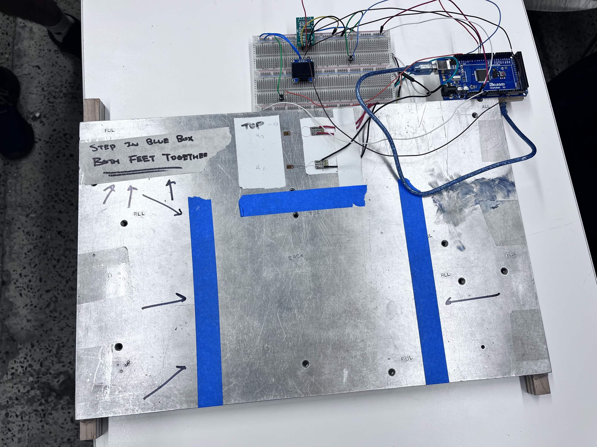
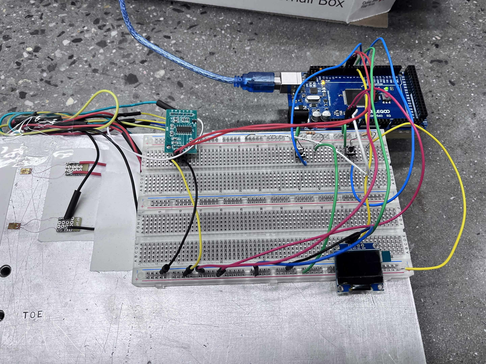

Digital Scale


Overview
My groupmates and I were tasked with building a scale that was capable of weighing a few pounds. I wanted to go beyond that and build something capable of weighing another person.
What I built
- Using 4 strain gauges in a Wheatstone Bridge configuration, my group measured the strain as felt by the gauges, and converted the measurement into Kilograms.
- We used a steel sheet about 3/8th inch thick as our base plate, because its bending is predictable and can sustain the weight of an adult human.
- We also used an amplifier to increase the signal being sent to the Arduino, which helped increase the sensitivity of the scale.
Result
The results are outlined below. Safe to say it worked very well!
#include "HX711.h"
#include
#include
#include
#define SCREEN_WIDTH 128 // OLED display width, in pixels
#define SCREEN_HEIGHT 64 // OLED display height, in pixels
// Declaration for an SSD1306 display connected to I2C (SDA, SCL pins)
#define OLED_RESET -1 // Reset pin # (or -1 if sharing Arduino reset pin)
Adafruit_SSD1306 display(SCREEN_WIDTH, SCREEN_HEIGHT, &Wire, OLED_RESET);
HX711 scale;
uint8_t dataPin = 6;
uint8_t clockPin = 7;
uint8_t tarePin = A0;
uint8_t unitPin = A1;
long calibration= -8200;
bool useKg = true;
float f;
// adjust pins if needed
void setup()
{
Serial.begin(115200);
pinMode(tarePin,INPUT);
pinMode(unitPin,INPUT);
if (!display.begin(SSD1306_SWITCHCAPVCC, 0x3C)) {
Serial.println(F("SSD1306 allocation failed"));
for (;;) ; // stop here if display isn't found
}
display.clearDisplay();
display.setTextSize(2); // 2× font
display.setTextColor(SSD1306_WHITE);
scale.begin(dataPin, clockPin);
scale.set_scale(calibration);
scale.tare(20); // reset the scale to zero = 0
delay(200);
}
void loop()
{
// continuous scale 4x per second
if (digitalRead(unitPin) == HIGH) {
useKg = !useKg;
while (digitalRead(unitPin) == HIGH);
}
if (digitalRead(tarePin) == HIGH) {
scale.tare(20);
delay(200);
while (digitalRead(tarePin) == HIGH);
}
float kg = scale.get_units(5);
float w = useKg ? kg : kg * 2.20462;
Serial.print(w, 3);
Serial.println(useKg ? F(" kg") : F(" lb"));
char buf[16];
dtostrf(w, 6, 2, buf); // " 63.42" etc.
display.clearDisplay();
display.setCursor(0, 16);
display.print(buf);
display.print(useKg ? F(" kg") : F(" lb"));
display.display();
delay(25);
}